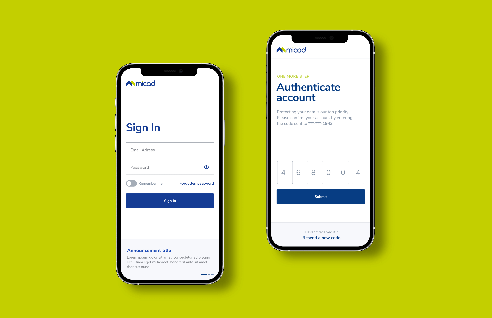
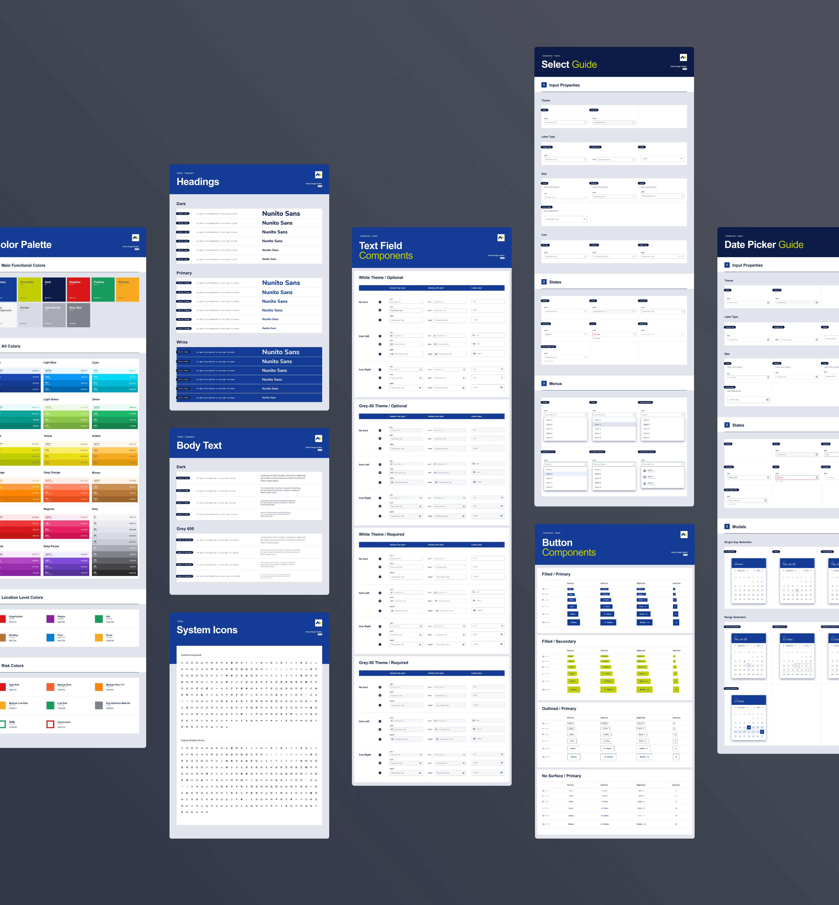

Fell free to hit me up, either for a chat about design, an opportunity or even a travel recommendation.
Porters
Activity
Manager
Increasing the efficency of soft services management within the NHS hospitals by improving the user experience of the activity manager application
Micad is the number one property management software application used by the NHS with over 170 NHS Trusts nationwide using Micad applications.
The efficiency of providing clinical care is directly impacted by the soft facilities management services. Porters are the heartbeat of NHS hospitals, making sure crucial goods and items are delivered where they are needed most. They are also make sure patients are at the right place at the right time to get the treatment they need. Micad’s Soft Services App provides a smart way of managing the daily portering tasks within a hospital.
The application has two components dedicated to two diferrent categories of users. Always on the go, porters recieve and process their daily tasks through a native mobile app. At the same time, the desk clerk is responsible with logging the tasks in the system as well as efficiently assigning those tasks to specific porters, all done by using the web desktop app.
Client
Year
Project Type
Scope
Made at
Micad
2021
Mobile Native App, Desktop App
Wireframe,, UI Design
Redouble Agency
Mapping user actions on a visual representation of all the possible paths was an essential step that I took at the beggining of the process. It helped me to connect all the dots gathered at the discovery phase by gaining better understanding of the requirements and user goals. Acting as a map, the user flow also helped me to organize my design process as well as validating with the stakeholders how the product should work.


Always on the go, porters needed their board of requests to be as clear as possible. At times, their schedule could get very busy, that is why our goal here was to eneable porters to easily scan the most important details even when they have to multi-task.
Through hierarchy, contrast, whitespace, alignment and grouping of elements I managed to create the intended path that the user’s eye should follow within the request card. The starting time of the request is the most important information followed by the code identifier of the request.
All the details of a task are revealed to the porter on the Request Details screen. For everything to work smoothly porters duty is to log their activity in real time. They must use the “Travel” button If they have to travel to the starting location of the request and the “Start” button to start logging the task. They also have the option to reject a task if they are unable to undertake it at that moment.
To keep the user aware at all times of the task that he is tracking, I proposed a design solution that is usually found in time tracking apps: a component located right on top of the bottom navigation that displays the timer and enables the porter to pause or finish the task from any screen of the app. If they want to pause or reject a request they must offer a reason. The app helps them to rapidly choose from a set of answers, automating communication with the desk clerks.

Requests are usually added through the desktop app but there are some cases when it is required to add them on the go. The “Add Request” functionality was designed with simplicity in mind, offering inputs only for the most crucial details. To avoid overwhelming the user I decided to divide the process into steps.
A productive workday is fueld by taking breaks. The “Breaks” screen offer porters a simple solution to track them. Each type of break has its own dedicated card, so that starting it could be done by a single tap. Micad requested us to disable all functionalities of the app while a break is active, so we decided to remove the bottom navigation altogether, maintaining the entire focus of the screen on what’s important.

If porters are the heart of the hospital, the desk clerks are the brain. Our goal was to offer them a frictionless experience in doing their job. Understanding how they work, what they really need and what they expect was crucial for a successful design.

We discovered that it is very important for them to be able to easily scan both the request list and the list of porters that are at work. Because they are the brain, the desk clerks must decide to whom to assign a request based on the request details as well as the current workload of the porters. Contrasting these two main sections as well as placing the request actions right near the selected request were the most important design decisions that we made.

Allocating a request could be done in two ways: by dragging and dropping right on the main screen or by using the button. This way we offered flexibility to desk clerks to use the app in a way that they feel the most productive. The “Allocate” modal displays the porters in different colors depending on their workload.
Adding requests is the other major functionality of the desktop app. Advanced details about the task are logged here, even for requests that where added through the mobile app. Dividing the process into steps was even more important here, as well as grouping the inputs in a way that made the most sense for the desk clerks.
To reduce costs and have time to focus on more important problems we created the means to scale the design as easy as possible. Because I love complexities, my favourite task of all was to develop the new Micad’s Design System.
The main goals were maintaining visual and functional consistency, creating a single soruce of truth for designers, developers and stakeholders, reducing building time and assuring ease of making changes that propagate between all applications.

To navigate the complexity of building a design system I used a methodology called Atomic Design. This method helped me to build all the components in logical order. Moreover, I was careful to build every component with the developer in mind, so I took my time to organize all layers and to name them accordingly.

Besides researching, planning and creating the components, I also created a presentation of the design system that contained all the variations of the components as well as a guide that explains by what properties they vary and what are the possible states.
Get in touch /
Get in touch /
Get in touch /
The best way to get in touch is through my email adress. Check the contact page for all my contact details.
View
My Contact
Details
Get in touch /
Get in touch /
Get in touch /
Fell free to hit me up, either for a chat about design, an opportunity or even a travel recommendation.
The best way to get in touch is through my email adress. Check the contact page for all my contact details.
View
My Contact
Details